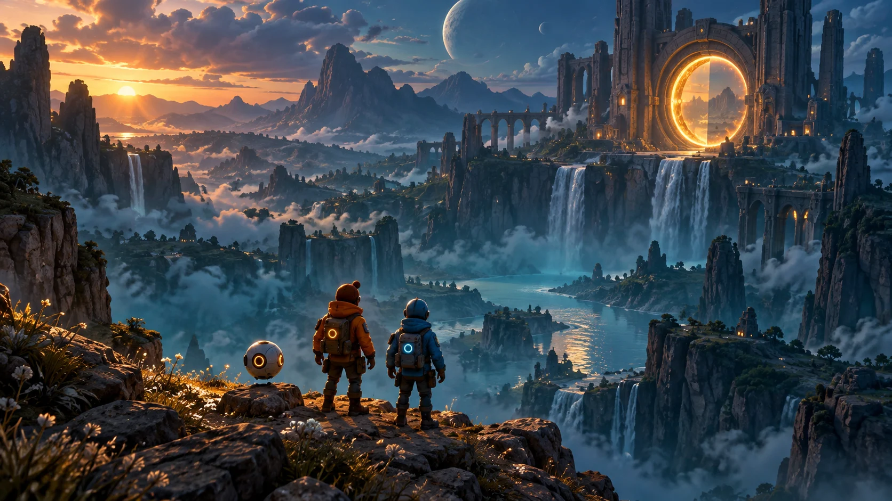

A próxima partida é juntos
Sua partida.
Seus amigos.
Na mesma sala.
Compartilhe o jogo, entre na conversa e passe o controle. A distância fica do lado de fora.
Gratuito. Sem criar conta. Só mandar o link.

Ao vivo · Você está transmitindoSem complicação.
- 01
Crie sua sala
Um clique. Um lugar só de vocês.
- 02
Mande o link
Seus amigos entram pelo navegador.
- 03
Solte o play
Compartilhe a tela e a conversa.
O jogo muda. A companhia fica.
Antes, durante e depois do jogo
Entre pela partida.
Fique pela resenha.
Nem precisa compartilhar a tela para estar junto. Entre por voz, conte como foi o dia e comece a transmitir quando der vontade.
- Voz com supressão de ruído
- Chat e soundboard
- Convite por link
Tem lugar para o Player 2
O próximo movimento
pode ser do seu amigo.
Aquela fase difícil? Joguem juntos. Compartilhe um jogo com multiplayer local e libere o controle para quem está na sua sala.
Você decide quando liberar ou revogar o acesso. O anfitrião precisa do aplicativo Windows e da configuração de controle virtual compatível.
Conheça o aplicativoUma sala. Duas formas de entrar.
Jogue do seu jeito.
Entre pelo navegador ou tenha mais recursos de captura e controle com o aplicativo Windows.
No Navegador
Ideal para entrar rapidamente na partida sem precisar instalar nada no computador.
- 100% gratuito e sem download
- Compatível com Chrome, Edge, Firefox e Brave
- Entrada imediata por link de convite
Aplicativo para Windows
Desenvolvido para quem transmite jogos frequentemente e quer máxima integração.
- Modo Janela Fixada no Topo (Always-on-Top)
- Captura de tela acelerada por GPU sem avisos do navegador
- Integração nativa de gamepads para Player 2